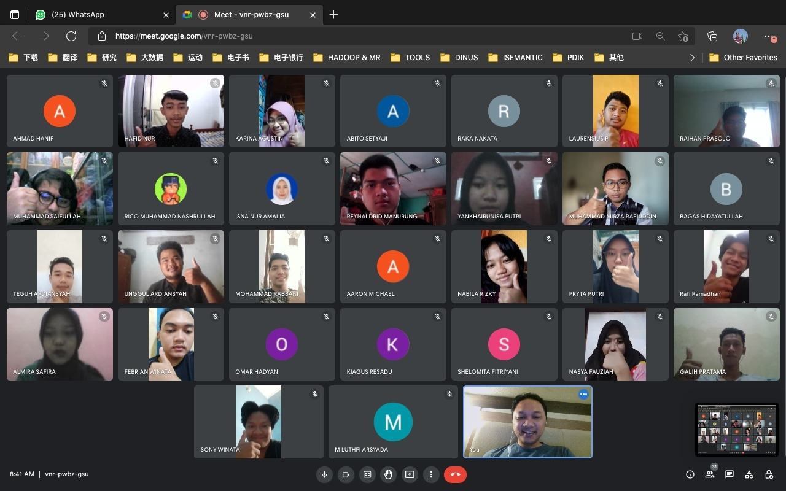
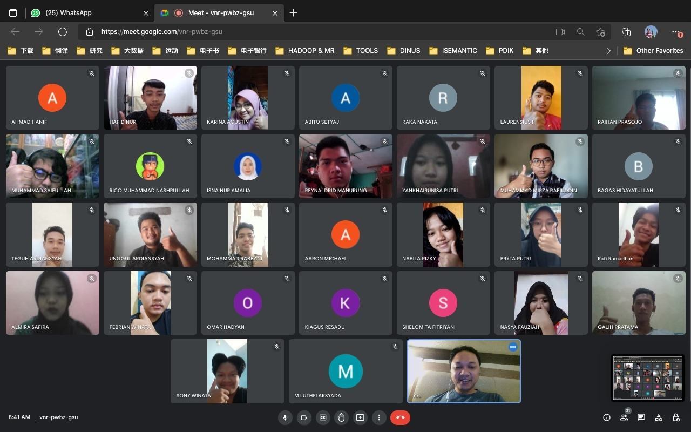
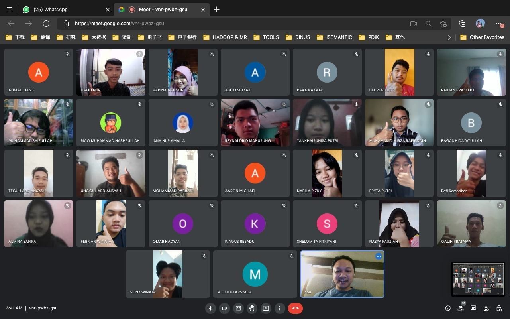

Foto Kegiatan
 

Dasar komputasi dulu masuk di mata kuliah matrikulasi akan tetapi sekarang di 2022 daskom (Dasar Komputasi) ini masuk ke mata kuliah wajib untuk mahasiswa sejumlah 2 SKS atau 14 pertemuan yang diajarkan oleh Dosen Bapak Edi Faisal, M.Kom. Alhasil pada matrikulasi hanya terdiri satu mata kuliah yaitu Pengantar Teknologi Informasi dengan jumlah SKS yang sama dan dijalankan selama 2 minggu.
Pada daskom di ajarkan mengenai dasar-dasar pada software umum di komputer seperti Merakit PC secara virtual, Ms.word, Ms.excel, Ms. power point, dan lain sebagainya.
